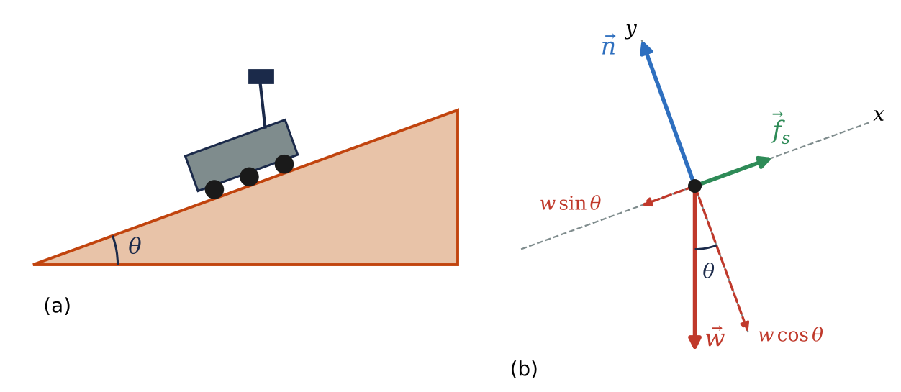
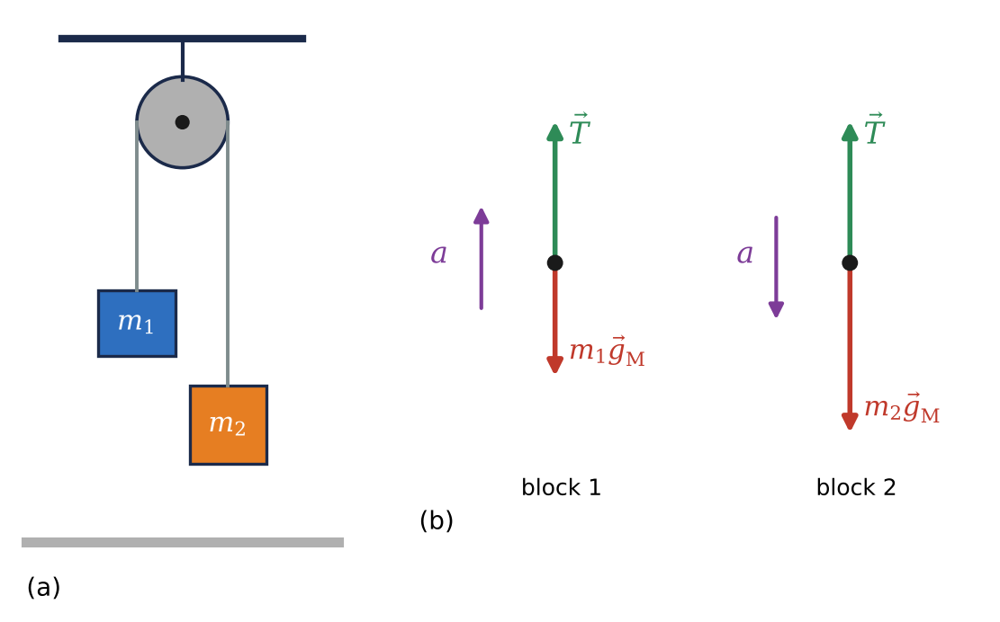
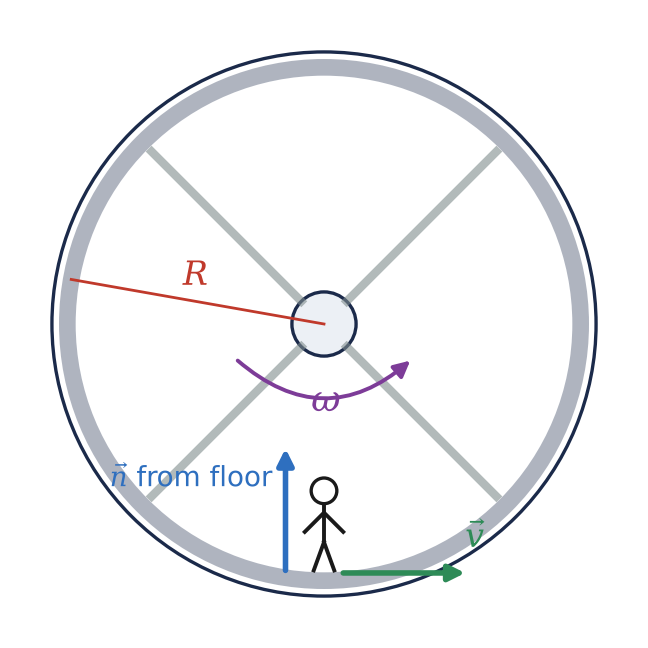

🛰️What you will learn
By the end of this module, you can:
- Draw a correct free-body diagram and use \(\sum \vec{F} = 0\) to find unknown forces on a body in equilibrium, including on inclined surfaces on other worlds.
- Apply \(\sum \vec{F} = m\vec{a}\) to accelerating bodies, including apparent weight in elevators and connected bodies such as an Atwood machine.
- Model static, kinetic and rolling friction and fluid drag, and compute terminal speeds in planetary atmospheres.
- Identify the real force that supplies the centripetal force in banked curves, orbits, rotating habitats and vertical circles.
- Name the four fundamental interactions and say which one lies behind a given force.
5.1Using Newton's First Law: Particles in Equilibrium
A body is in equilibrium when it is at rest or moving with constant velocity in an inertial frame: a parked rover, a camera hanging in an observatory dome, a probe coasting far from any planet. Treating the body as a particle, the condition is that the vector sum of all forces is zero. In a plane this gives two separate component equations, so each body lets us solve for up to two unknowns.
The key tool is the free-body diagram: sketch the body alone and draw an arrow for every force acting on it, and nothing else. There is no "force of motion" and no "\(m\vec{a}\)" arrow; every arrow must come from a real interaction with another body (a cable, a surface, a planet's gravity). Sometimes the smartest body to isolate is a knot where several cables meet.
On an incline of angle \(\theta\), tilt the axes so \(x\) runs along the slope. Then only the weight needs splitting: \(w\sin\theta\) down the slope and \(w\cos\theta\) into it. On Mars the weight is \(w = mg_\text{M}\) with \(g_\text{M} = 3.71\ \text{m/s}^2\), so every weight-related force is smaller than on Earth, but the angle at which a rover starts to slide does not depend on \(g\) at all.
Remember Newton's third law: action and reaction act on different bodies, so they never appear in the same free-body diagram. A massless rope has the same tension everywhere along it.

5.2Using Newton's Second Law: Dynamics of Particles
If the net force is not zero, the body accelerates according to \(\sum \vec{F} = m\vec{a}\). The method is the same as for equilibrium; only the right-hand side changes from zero to \(ma_x\) or \(ma_y\). Draw the acceleration vector beside the free-body diagram (never inside it) and, when you know its direction, point one axis along it.
Apparent weight. An astronomer standing on a scale in an observatory elevator reads the normal force, not her weight. With \(y\) upward, \(n - mg = ma_y\), so \(n = m(g + a_y)\). She feels heavier when the car accelerates upward and lighter when it accelerates downward. In free fall (\(a_y = -g\)) the scale reads zero: she is apparently weightless, exactly like astronauts on the ISS, who are still pulled by Earth's gravity but are in continuous free fall together with their station.
Connected bodies. Two masses hung over a light, frictionless pulley form an Atwood machine. Choosing each body's positive direction along its own acceleration and adding the two equations eliminates the tension. Because \(a \propto g\), an astronaut could use one as a simple gravimeter on the Moon, and with nearly equal masses the motion is slow enough to time easily.

5.3Friction Forces
The contact force between two surfaces has a perpendicular part, the normal force \(n\), and a parallel part, the friction force \(f\). Microscopically, friction comes from electromagnetic bonds between surface high points.
- Kinetic friction (surfaces sliding): \(f_k = \mu_k n\), opposite the relative motion.
- Static friction (no slipping): \(f_s\) adjusts to whatever is needed, up to a maximum \(\mu_s n\). Usually \(\mu_k < \mu_s\), so it is harder to start a heavy telescope dolly than to keep it moving.
- Rolling friction: \(f_r = \mu_r n\); small on pavement but large in soft Martian sand, where the Spirit rover became trapped.
Since friction scales with \(n\), and \(n\) scales with local gravity, a lunar rover can generate only about one sixth of the friction it would have on Earth. Always find \(n\) from the perpendicular force equation; it is not always \(mg\).
Fluid drag opposes velocity: \(f = kv\) at low speed and \(f = Dv^2\) at high speed, with \(D = \tfrac12 C\rho A\). A falling probe speeds up until drag balances its weight; then it moves at its terminal speed. Mars's air is about 80 times thinner than Earth's, so parachutes alone cannot land a spacecraft safely there.
5.4Dynamics of Circular Motion
A particle moving at constant speed \(v\) in a circle of radius \(R\) accelerates toward the center with \(a_\text{rad} = v^2/R = 4\pi^2R/T^2\). By Newton's second law there must be a net force toward the center, \(\sum F_\text{rad} = mv^2/R\). This is not a new kind of force: it is supplied by tension, friction, a normal force or gravity. Never add an outward "centrifugal force" or an "\(mv^2/R\)" arrow to a free-body diagram.
- Banked curves: with no friction, the horizontal part of the normal force provides the centripetal force, giving \(\tan\beta = v^2/(gR)\). The design speed scales as \(\sqrt{g}\), so a lunar curve has a much lower design speed than an identical one on Earth.
- Satellites: gravity alone supplies the centripetal force, so \(v = \sqrt{g' r}\), where \(g'\) is the gravitational acceleration at orbit radius \(r\). The ISS moves at about 7.66 km/s with a 93 min period; it and its crew are in shared free fall.
- Rotating habitats: the floor's normal force pushes astronauts toward the hub; they feel Earth-like weight when \(\omega = \sqrt{g/R}\). Comfort limits (below about 2 rpm) demand radii of hundreds of meters.
- Vertical circles: at the top, \(T + mg = mv^2/R\); at the bottom, \(T - mg = mv^2/R\). A tether stays taut at the top only if \(v^2 \ge gR\).

5.5The Fundamental Forces of Nature
Weight, tension, normal force, friction, drag: all of these trace back to just four fundamental interactions, and astronomy is where all four play leading roles.
- Gravitational: the weakest, but infinite in range and always attractive, so it adds up and rules planets, stars and galaxies.
- Electromagnetic: infinite range, attractive or repulsive. Normal forces, tension, friction and drag are all electromagnetic at the atomic level, and so is the emission and absorption of light behind every spectrum.
- Strong: binds quarks into protons and neutrons and holds nuclei together; range about \(10^{-15}\) m. It powers stars through fusion.
- Weak: turns protons into neutrons and vice versa; range about \(10^{-18}\) m. Its feebleness makes the first step of the Sun's proton-proton chain slow, so the Sun lasts about 10 billion years. Neutrinos feel only the weak force (and gravity).
For two protons, electric repulsion beats gravity by a factor of about \(10^{36}\) at every distance. Gravity still dominates on large scales because bulk matter is electrically neutral while mass never cancels. Physicists have unified electricity and magnetism (Maxwell) and the electromagnetic and weak forces (the electroweak theory); the early universe is the testing ground for further unification. In this course, every force in a free-body diagram is either gravitational or, at bottom, electromagnetic.
★Key takeaways
- Equilibrium means \(\sum \vec{F} = 0\); write it in components and solve, using a free-body diagram that shows only real forces acting on the chosen body.
- For accelerating bodies, \(\sum \vec{F} = m\vec{a}\); \(m\vec{a}\) is the result of the forces, never a force itself. A scale reads the normal force \(n = m(g + a_y)\), which is zero in free fall.
- Friction is proportional to the normal force (\(f_k = \mu_k n\), \(f_s \le \mu_s n\)), so it is weaker on low-gravity worlds; drag grows with speed until it balances weight at the terminal speed \(v_t = \sqrt{mg/D}\).
- Circular motion needs a net inward force \(mv^2/R\) supplied by real forces: normal force on banked curves and in rotating habitats, gravity for orbiting satellites, tension on a tether.
- All forces come from four fundamental interactions; everyday mechanical forces are gravitational or electromagnetic, while the strong and weak forces power the stars.
⟡Worked examples
Each example follows the book's method: Identify and set up, Execute, Evaluate.
The 899 kg Curiosity rover is parked, brakes locked, on a 20.0\(^\circ\) slope of Mount Sharp in Gale Crater, where \(g_\text{M} = 3.71\ \text{m/s}^2\). (a) Find the normal force and the friction force exerted on the rover by the ground. (b) What minimum coefficient of static friction lets the rover stay parked? Would the answer change on Earth?
Show solution (try it first)
Identify and set up: The rover is at rest, so it is in equilibrium. Forces: weight \(w = mg_\text{M}\), normal force \(n\) perpendicular to the slope, and static friction \(f_s\) up the slope. Tilt the axes: \(x\) up the slope, \(y\) perpendicular to it. The weight components are \(-w\sin\theta\) along \(x\) and \(-w\cos\theta\) along \(y\).
Execute: (a) \(w = (899\ \text{kg})(3.71\ \text{m/s}^2) = 3335\ \text{N}\).
\[\sum F_x = f_s - w\sin\theta = 0 \;\Rightarrow\; f_s = (3335\ \text{N})\sin 20.0^\circ = 1140\ \text{N}\]
\[\sum F_y = n - w\cos\theta = 0 \;\Rightarrow\; n = (3335\ \text{N})\cos 20.0^\circ = 3130\ \text{N}\]
(b) Friction must be able to supply \(f_s\): \(\mu_s n \ge f_s\), so \(\mu_s \ge f_s/n = \tan\theta = \tan 20.0^\circ = 0.364\).
Evaluate: The weight cancels in (b), so the minimum coefficient depends only on the angle. On Earth both \(n\) and \(f_s\) would be 2.64 times larger, but their ratio, and thus the required \(\mu_s\), is the same 0.364. Engineers can therefore test traction on tilted beds of simulated Martian soil on Earth.
A Mars lander and aeroshell (total mass 3200 kg) descend under a parachute 21.5 m in diameter with drag coefficient \(C = 0.60\), through air of density \(\rho = 0.015\ \text{kg/m}^3\), where \(g_\text{M} = 3.71\ \text{m/s}^2\). (a) Find the terminal speed. (b) Compare with the same system on Earth near sea level (\(\rho = 1.2\ \text{kg/m}^3\)).
Show solution (try it first)
Identify and set up: At terminal speed, drag balances weight. Drag is quadratic, \(f = Dv^2\) with \(D = \tfrac12 C\rho A\), so \(v_t = \sqrt{mg/D}\). The canopy area is \(A = \pi r^2\) with \(r = 10.75\) m.
Execute: (a) \(A = \pi(10.75\ \text{m})^2 = 363\ \text{m}^2\), so on Mars
\[D = \tfrac12(0.60)(0.015\ \text{kg/m}^3)(363\ \text{m}^2) = 1.63\ \text{kg/m}\]
\[v_t = \sqrt{\frac{(3200\ \text{kg})(3.71\ \text{m/s}^2)}{1.63\ \text{kg/m}}} = 85\ \text{m/s}\]
(b) On Earth, \(D = \tfrac12(0.60)(1.2)(363) = 131\ \text{kg/m}\) and \(v_t = \sqrt{(3200)(9.80)/131} = 15\ \text{m/s}\).
Evaluate: Even with a huge parachute the lander would hit Mars at about 85 m/s (over 300 km/h), which is why real Mars missions finish the descent with rockets, airbags or a sky crane. Check: \(Dv_t^2 = (1.63)(85.2)^2 \approx 1.19\times10^4\ \text{N} = mg_\text{M}\).
A ring-shaped habitat for a crewed Mars transfer vehicle has a radius of 250 m measured to the floor. (a) What rotation period gives the crew an apparent weight equal to their Earth weight, and how many revolutions per minute is this? (b) What is a crew member's speed? (c) What normal force does the floor exert on a 70.0 kg astronaut?
Show solution (try it first)
Identify and set up: Each astronaut moves in uniform circular motion with \(R = 250\) m. The only radial force is the floor's normal force, pointing to the hub. Requiring \(n = mg\) means \(a_\text{rad} = g\), so \(T = 2\pi\sqrt{R/g}\) and \(v = 2\pi R/T\).
Execute: (a) \[T = 2\pi\sqrt{\frac{250\ \text{m}}{9.80\ \text{m/s}^2}} = 31.7\ \text{s}\] which is \(60/31.7 = 1.89\) revolutions per minute.
(b) \(v = 2\pi(250\ \text{m})/(31.7\ \text{s}) = 49.5\ \text{m/s}\).
(c) \(n = mv^2/R = mg = (70.0\ \text{kg})(9.80\ \text{m/s}^2) = 686\ \text{N}\).
Evaluate: 1.89 rpm is just under the 2 rpm comfort guideline, which is why serious designs need radii of hundreds of meters. Because \(a_\text{rad} \propto R\), an astronaut's head (2 m closer to the hub) feels only about 1% less "gravity" than her feet; in a 10 m station the difference would be 20%.
✍️Activity 5: Forces on Other Worlds
Work through each item with a free-body diagram first, then the component equations. Use \(g = 9.80\ \text{m/s}^2\) on Earth, \(1.62\ \text{m/s}^2\) on the Moon and \(3.71\ \text{m/s}^2\) on Mars unless the item gives another value. Enter numeric answers as plain numbers in the unit requested (answers within 2% are accepted). Finish with the short reflection.
8 graded items, 1 point each, plus a short reflection. For each problem, write your solution in the solution box, then type the final answer as a plain number (keep 3 significant figures; small rounding differences are accepted). You may submit up to 2 times; every attempt is recorded. Right after submitting you will see your score and which items are correct or wrong; after your last attempt you will also see the correct answers.
Use these values unless an item gives its own: \(g_\text{Earth} = 9.80\ \text{m/s}^2\), \(g_\text{Moon} = 1.62\ \text{m/s}^2\), \(g_\text{Mars} = 3.71\ \text{m/s}^2\), \(G = 6.674\times10^{-11}\ \text{N·m}^2/\text{kg}^2\), \(M_\text{Earth} = 5.972\times10^{24}\ \text{kg}\), \(R_\text{Earth} = 6371\ \text{km}\).